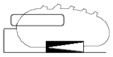

|  | |
26. Juni 2006
봄날은 간다 One Fine Spring Day (Kor 2001)
Few films have had as much influence within the Korean film industry as the 1998 melodrama Christmas in August. Despite its subdued tone and understated themes, the film in many ways revolutionized the way Korean filmmakers approach melodrama. Director Hur Jin-ho won over many fans both in Korea and in the rest of Asia for his ability to infuse everyday situations with emotion and meaning.
 For his second
film, Hur chose a universal and somewhat ordinary subject: a man and a
woman who fall in love, and then break up. He says that while his
first film was structured around the beginnings of love, One Fine
Spring Day is more concerned with how it ends. As with his previous
film, the idea of family also plays a big role: the man, Sang-woo,
lives with his father, aunt, and grandmother, relying at times on
their support; Eun-su, the woman, lives alone.
For his second
film, Hur chose a universal and somewhat ordinary subject: a man and a
woman who fall in love, and then break up. He says that while his
first film was structured around the beginnings of love, One Fine
Spring Day is more concerned with how it ends. As with his previous
film, the idea of family also plays a big role: the man, Sang-woo,
lives with his father, aunt, and grandmother, relying at times on
their support; Eun-su, the woman, lives alone.
One Fine Spring Day is a gorgeous and yet somewhat abstract sort of a film, that will bore some viewers and captivate others. Hur has been called "Korea's Ozu" (he himself is a big fan of the Japanese director) for the slow pace of his films and his introspective style. Yet to make this comparison is to ignore how much of Hur's own personality is stamped on his works. With only two films he has become an important voice in Korean cinema, and his twisting of melodrama to make it serve different ends has become a model for many young Korean filmmakers.
One thing that makes this film particularly special is its use of sound. The characters themselves are drawn together by sounds (Sang-woo is a recording engineer, Eun-su is a radio producer), but everyday sounds, both man-made and natural, make up a crucial aspect of the film's style. When combined with precise and at times striking camerawork, the film is able to create moments that are both solemn and beautiful to see.
Anyone who has been through a painful breakup will likely find
resonance in the situations depicted by this film; part of this film's
strength is its universality. Yet what makes the movie truly special is
the care with which it was made and the quiet force of its personality.
-- (Darcy Paquet, koreanfilm.org)
"... The director was present to answer questions, through an interpreter, and one of his responses indicated that viewers who are more experienced in love tend to identify with the female lead, while those less experienced see themselves in the male character." --imdb user comment
Festivals and Awards:
Best Director Winner, Hur Jin Ho (100 Sang Film Award 2002)
Best Artistic Contribution Award Winner, Hur Jin Ho (Tokyo
International Film Festival 2001)
Best Film Winner (Blue Dragon Film Awards 2001)
Viennale 2002
Kor 2001, B+R: Hur Jin-ho 허진호,
D: Yoo Ji-tae 유지태, Lee Young-ae 이영애. 106min, kor. meUT
19:30 Uhr, Space04 Kunsthaus Graz, € 5.-
- [imdb]
- [koreanfilm.org]
- [DVD]
(nur $ 5.- !)